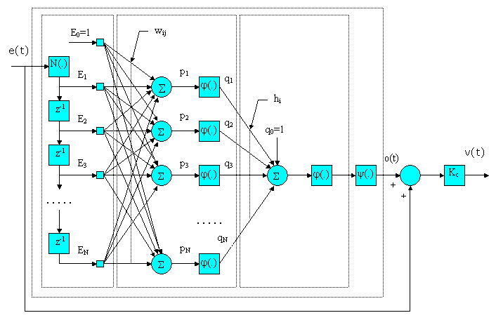
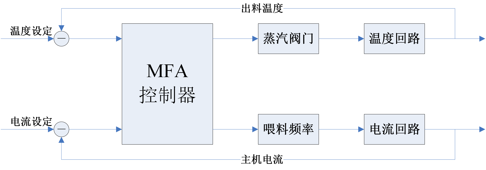
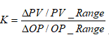
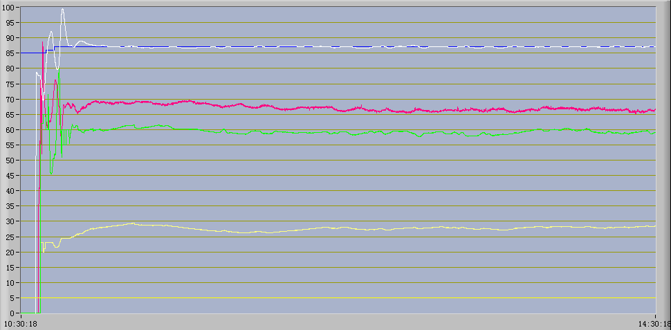

制粒机的无模型自适应控制
原创作者：王永建(blog@wangyongjian.cn)
原文引用地址：blog.wangyongjian.cn
摘 要
制粒机生产过程是一个大滞后、多变量的难控系统，常规的控制系统难以取得理想的控制效果，而无模型自适应控制器具有良好的输出跟踪性能，有很强的自适应能力和鲁棒性，能有效的控制复杂过程。将无模型自适应（MFA）控制器应用到扬州市某饲料厂的制粒机自动控制系统中，进行了长时间的试生产，试验结果表明MFA控制系统可以有效克服双回路耦合及大滞后带来的影响，取得了良好的控制效果。
关键词
制粒机 大滞后 多变量 无模型自适应（MFA）控制
1. 引言
制粒机是饲料行业中完成对畜禽料、水产料制粒成形的设备，其性能优劣直接影响到颗粒饲料的生产质量和产量。制粒机的控制，目前国内主要还是通过手动操作来实现，而随着现代养殖业与饲料工业的发展，饲料市场的竞争日趋激烈，饲料生产厂家需要为制粒设备配置易于操作和维护的自动控制系统，以提高产品的质量和产量，节约能耗，增加市场竞争力。
2. 工艺分析
制粒机是完成制粒成形的设备。衡量制粒效果的主要指标是成形率、粉化率、糊化率和水中稳定性等。在制粒生产过程中，主要是通过往调质器中通入蒸汽，对原料（通常是粉状和小颗粒性状的谷物类）加温和加湿，经过调质器充分搅拌混合。混合效果决定产品的成形率和粉化率，原料在调质器中经过的时间长短决定产品的糊化度和水中稳定性。经调质器混合搅拌后的物料进入制粒器（主机），这是制粒机的核心部分，物料在此压制成型，由粉状或小颗粒状的原料制成粒状饲料。
目前制粒机控制要解决的问题主要有两个，即产品的产量和质量，具体地说就是喂料速度控制和调质温度控制，这两部分目前均以人工手动操作为主。主机电流与喂料量成正比，运行中主机电流越接近最大值则产能越大，但电流过高时又会增加堵机、打滑故障的发生几率。出料温度与蒸汽阀门开度成正比，运行中出料温度要求保持在规定的范围内，以保证物料的调质熟化程度。而当蒸汽阀门改变时，蒸汽量的变化会影响到物料的干湿程度，进而对主机电流存在影响，所以不能仅将两个回路分开来考虑。另外，原料和蒸汽入口均为调制器的入口处，温度检测在调制器的出口，电流检测在制粒主机中，根据制粒机型号不同，调质器的长度也不同，这造成了温度和电流反映的时滞变化。在原料供应的全过程中，会经常经历更换原料、原料短缺，以及由于原料性质的更改而导致喂料量的变化，这些变化又是对温度产生影响的重要因素。
总体而言，整个制粒机系统存在着大滞后、双回路耦合等各种难控问题，简单的PID控制无法完成整个工作周期中的自动调节任务，尤其是在喂料量出现大的变动时，普通PID系统，就会紊乱。也许可以通过自适应PID模型得到优化解决，但饲料行业的特点说明，使用方没有力量自己进行系统参数的正确调整，这增加了设备生产方的服务成本，所以制粒机操作工们不得不长期处于高温、多粉尘、高噪声的严酷工作环境中进行生产。
3. 无模型自适应控制器
无模型自适应（MFA，Model-Free Adaptive）控制器，是由美国通控集团博软公司（CyboSoft，General Cybernation Group Inc.）开发并拥有专利的新型控制器，具有应用范围广、自适应、易于安装和维护等特点。在大多数场合，MFA控制器可以直接取代传统控制器而无需重新设计系统(即插即用)，且无需建立不易开发和维护的过程模型，安装后也无需控制器参数整定。
MFA与其它负反馈控制器(自适应或非自适应)一样，是根据设定值和过程变量之间的偏差决定如何最好地控制过程。但与传统的过程控制器不同的是，MFA在设计上采用了如图2所示的多层感知器（MLP）结构的神经网络（ANN），ANN有一个输入层、一个具有N个神经元的隐含层和一个只有一个神经元的输出层。该算法以缩小设定值与过程变量之间的误差为目标更新权重因子（Wij和hi），实现自学习和自适应功能。  图1 MFA控制器结构
MFA技术的关键可以归纳为： ①所有过程的信息都已包含在输入输出的信号中，只是以往采用传统的控制方法缺乏有效提取这些信息并加以利用的手段； ②通过无事先训练的快速强制学习等方式，使MFA控制器能够准确把握过程对象当前的特征，产生更合理的对策，从而获得理想的调节控制结果。
4. 控制方案设计及应用
4.1 控制方案设计
为保持制粒机调质出口温度和工作电流的稳定性，以在保证产品质量的情况下充分发挥制粒机生产能力和预防堵机，又由于原料需经过调质后才能在主机中制粒，该过程存在较大的滞后时间，所以设计方案中采用抗滞后MFA控制器分别通过闭环自动调节汽料比的手段来控制调质出口温度和通过闭环自动调节喂料变频器频率的手段来控制主机电流。考虑到两个回路之间又存在一定的耦合作用，互相影响，所以必须对系统进行解耦，实现对双变量过程的同步控制。控制框图如图3所示：  图2 控制系统框图
4.2 参数整定
MFA控制器是一种无模型自适应控制器，它的参数整定非常简单，对于一般的控制回路只需要调整比例增益Kc、时间常数Tc和采样时间Ts，而本方案中也仅需要再加上滞后时间Tau即可。 对于任何一个控制过程，静态增益K、时间常数Tc和滞后时间都仅需做1-2次开环阶跃响应试验即可计算得到。采样时间Ts的设定则比较随意，只需满足 即可，没有特殊要求时一般默认为1s。静态增益K的计算公式如下：

ΔPV是OP变化量ΔOP的作用下PV的变化量。PV_Range是PV上限和下限的差值，OP_Range是OP上限和下限的差值。MFA控制器的OP_Range总是为100。 对于MFA控制器来说，控制器增益Kc应依据计算出的静态增益来设置，一般的原则是使Kc≈1.2/K。可见，其参数整定比PID系数整定要简单得多。
4.3 应用效果
 图3 应用效果截图
如图3所示是制粒机MFA自动控制系统开机及一段时间运行的曲线截图。其中: 蓝线是调质温度设定值（量程：0-100℃）， 白线是调质温度实际值（量程：0-100℃）， 红线是制粒主机电流（量程：0-500A）， 绿线是蒸汽阀门开度（量程：0-100%）， 黄线是喂料变频器的频率值（量程：0-50Hz）， Y轴显示数据为量程百分比。
开机过程10分钟内即可达到调质温度稳定的正常生产阶段，尽可能减少开机时低温环境下的不合格物料生产量；正常生产阶段中调质温度一直稳定在设定值1℃左右范围内，完全能够满足生产工艺需求，且控制器根据制粒主机电流值变化情况自动调节进料频率，使主机电流也稳定在设定值2A左右范围内，尽可能避免堵机故障的发生。
5 小结
基于MFA控制算法的核心技术，已经开发出多种MFA控制器以解决特定的控制问题。不用建立在线或离线的过程模型，就可选用合适的MFA控制器去控制复杂的过程回路。MFA为从未解决过的制粒控制难题提供了简单有效的控制解决方案，用这种控制方法，能克服过程中存在的大滞后和多扰动问题，控制曲线与制粒生产工艺曲线基本重合，保证了制粒产品的质量和产量。而且，在实现制粒生产流程的自动化后，操作工无需再长时间处于严酷工作环境中，大大改善了工作环境和降低了操作难度。同时，还可以使非熟练操作工操作时的生产产量达到熟练操作工水平，保证了制粒生产产能的最大化。
参考文献： [1] George Cheng, MFA in Control with CyboCon, CyboSoft, General Cybernation Group Inc., Rancho Cordova, CA, 2004.